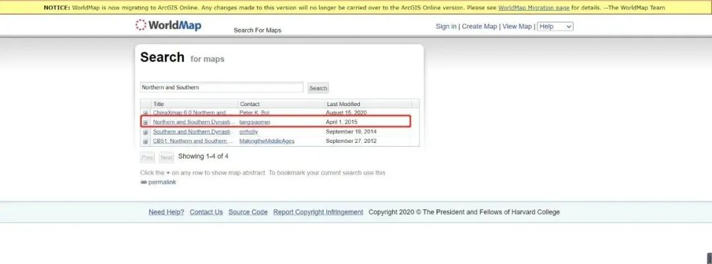

收录于合集
#地图绘制 6 个
#数据可视化 15 个
#实用技术 19 个
在前几期的实用技术推送中，我们与大家分享了《如何用R绘制并填充相对正确的世界地图》和《如何用R绘制并填充相对正确的中国地图》两篇技术贴，获得了圈内读者朋友的好评与支持。随着学习和研究的深入，在阅读偏向经济史和政治史的文献时，我们会发现这些领域的文献有时附上了作者绘制的历史地图，这让读者觉得耳目一新，甚至心生羡慕。事实上，对于可供R/Python/Stata读取的历史地图文件而言，其并没有什么神秘之处，它和绘制现代地图所需要的shp/json等文件一样，在本质上就是储存地理信息的多边形。
对于我们从事历史政治学/社会学研究的学生来说，如果在撰写论文或者做展示的时候插入一些有关历史地图的可视化往往会起到“一图胜千言”的效果。因此，只要能找到相关的历史地图文件，我们就能用R等统计软件将其绘制出来。因此，在今天的实用技术贴中，我们就与大家分享如何用R来绘制中国历史地图。我们希望这篇贴子能达成两个目的：首先是教大家如何寻找历史地图素材，其次是用R将它们绘制出来。
对于如何寻找历史地图素材这一问题很好解决，哈佛大学运行的世界地图网站（地址：http://worldmap.harvard.edu/maps/search?sort=last_modified&dir=DESC）提供了丰富且免费的不同时期的中外电子地图素材，读者可以前往这里搜索下载需要的地图素材（大部分的地图文件是可以找到的）。值得说明的是，该网站也收录了哈佛大学东亚系包弼德（Peter K. Bol）教授团队制作的中国历史地图文件。该系列地图以中国资深历史地理专家谭其骧院士主编的《中国历史地图集》地图为蓝本，对中国部分历史时期的地图进行了电子化处理。当然这一系列的电子地图并不全面，如并未对南北朝和五代十国等重要时期的历史地图进行全部电子化。
接下来，我将结合手头正在进行的博士论文章节写作，以宋元嘉二十六年，魏太平真君十年（449年）的全局地图绘制为例进行说明。这一年的次年在中国历史上具有重要的意义，因为开创“元嘉之治”的宋文帝刘义隆发起第二次北伐，结果大败，从此南朝由盛转衰，而北朝则开始转盛。需要指明的是，对照《中国历史地图集》可见，这一时期的中国境内还存在如柔然、吐谷浑、室韦、契丹、库莫奚以及西域等政权，但是电子地图文件并未包含。
首先，我们在哈佛世界地图网站的页面搜索栏中输入“Northern and Southern”，选择第二行进入，如图1所示：
 图1
然后我们勾选左侧选项中的448 CE Northern Wei and (Liu) Song，再点击红框处的Share Map进入，如图2所示：
图2
如图3所示，进入后我们再按照红框处选择448 CE Northern Wei and (Liu) Song进入：
图3
这样我们在图4中的红框处就能下载我们偏好的格式了（如shp、json或tiff等），本文选用的是json格式文件，它具有小巧轻便的优势。
图4
既然找到了历史地图资源，那么如何将其绘制出来呢？这一步其实与之前推送的实用技术贴中绘制当代中国/世界地图的方法一致。为了避免本文的历史地图绘制显得过于单薄，我们同时加载了世界地图和当代中国地图的json格式文件作为底图。为了方便大家理解，我们尽量将每一步绘制历史地图的步骤都完整呈现。
首先，我们打开R载入绘制地图必不可少的两个基本包tidyverse和sf并读取相应的json格式文件：
library(tidyverse)
library(sf)
World <- st_read("world.json")
China <- st_read("Chinaditu.json")
WeiSong <- st_read("WeiSong.json")
然后绘制宋魏时期的地图，如图5所示：
ggplot()+
geom_sf(data = World, colour = "#d9d9d9",fill="#d9d9d9")+ #之所以将边界和填充颜色设为相同是因为不能用当下世界地图的行政边界来表示当时历史上国家的行政边界
geom_sf(data = WeiSong, colour = "#d9d9d9",fill="white")+
coord_sf(xlim = c(80, 145), ylim = c(16, 50), expand = TRUE, clip = "on")+
ggtitle("宋魏时期全图（宋元嘉二十六年，魏太平真君十年（449年）")+
theme(panel.grid = element_blank(),
panel.background = element_rect(fill = "Aliceblue"),
axis.text = element_blank(),
axis.ticks = element_blank(),
axis.title = element_blank(),
plot.title = element_text(size = 15, hjust = 0.5, vjust=0),
plot.margin = unit(c(0, 0, 0, 0), "inches"))
图5
我们还可以增加一些城市的注记，这里我提供了南北朝一些重要城市的经纬度，如平城、洛阳、长安、建康和江陵等作为示例。我们首先载入带有经纬度的城市数据库：
WeiSongcities <- read_csv("WeiSongcities.csv", col_types = cols(Latitude = col_number(), Long = col_number()))
然后将其投射到地图上并标记名称，如图6所示：
ggplot()+
geom_sf(data = World, colour = "#d9d9d9",fill="#d9d9d9")+
geom_sf(data = WeiSong, colour = "#d9d9d9",fill="white")+
coord_sf(xlim = c(80, 145), ylim = c(16, 50), expand = TRUE, clip = "on")+
geom_point(data = WeiSongcities , aes(x=Long,y=Latitude),colour="red",size=3,alpha=0.8)+
geom_text(data = WeiSongcities,aes(x=Long,y=Latitude,label=Cities),size =4,vjust = 0, nudge_y = 0.5)+
ggtitle("宋魏时期全图（宋元嘉二十六年，魏太平真君十年（449年）")+
theme(panel.grid = element_blank(),
panel.background = element_rect(fill = "Aliceblue"),
axis.text = element_blank(),
axis.ticks = element_blank(),
axis.title = element_blank(),
plot.title = element_text(size = 15, hjust = 0.5, vjust=0),
plot.margin = unit(c(0, 0, 0, 0), "inches"))
图6
到了这一步我们切记不要以为大功告成了。因为根据国内出版中国历史地图的有关规定，在绘制西汉（公元前206年）以降的中国历代历史地图时，必须绘出南海诸岛和九段线，并加注“南海（涨海）”字样。由于本文使用的作为底图的中国地图自带南海诸岛和九段线，既可以弥补同样作为底图的世界地图相对简陋的缺点，同时也不需要再单独载入有关九段线和南海诸岛的地图文件。因此我们将其叠加到之前的图层当中，如图7所示：
NorthernWeiLiuSong <- ggplot()+
geom_sf(data = World, colour = "#d9d9d9",fill="#d9d9d9")+
geom_sf(data = China,colour = "#d9d9d9",fill="#d9d9d9")+ #同时将其边界和填充颜色设置为同色是为了突出这一时期历史两个政权的行政边界
geom_sf(data = WeiSong, colour = "#d9d9d9",fill="white")+
coord_sf(xlim = c(80, 145), ylim = c(16, 50), expand = TRUE, clip = "on")+
geom_point(data = WeiSongcities , aes(x=Long,y=Latitude),colour="red",size=3,alpha=0.8)+
geom_text(data = WeiSongcities,aes(x=Long,y=Latitude,label=Cities),size =4,vjust = 0, nudge_y = 0.5)+
ggtitle("宋魏时期全图（宋元嘉二十六年，魏太平真君十年（449年）")+
theme(panel.grid = element_blank(),
panel.background = element_rect(fill = "Aliceblue"),
axis.text = element_blank(),
axis.ticks = element_blank(),
axis.title = element_blank(),
plot.title = element_text(size = 15, hjust = 0.5, vjust=0),
plot.margin = unit(c(0, 0, 0, 0), "inches"))
图7
由于coord_sf()的设置限定了地图的显示区域，导致图7中的南海诸岛和九段线显示不全，这样我们需要单独绘制南海小图并将其插入到原来的主图当中。这里就需要借助coord_sf()的缩放功能和cowplot包的图片排版功能。
我们首先绘制这一历史时期的南海诸岛地图，如图8所示：
SouthChinaSea <- ggplot() +
geom_sf(data = China, colour = "#d9d9d9",fill="#d9d9d9")+
geom_sf(data = World, colour = "#d9d9d9",fill="#d9d9d9")+
geom_sf(data = WeiSong, colour = "#d9d9d9",fill="white")+
coord_sf(xlim = c(117131.4,2115095),ylim = c(-4028017,-1877844),
crs="+proj=laea +lat_0=40 +lon_0=104")+
theme(aspect.ratio = 1.25,
axis.text = element_blank(),
axis.ticks = element_blank(),
axis.title = element_blank(),
panel.grid = element_blank(),
panel.background = element_rect(fill = "Aliceblue"),
panel.border = element_rect(fill=NA,colour="#d9d9d9"),
plot.margin=unit(c(0,0,0,0),"mm"))
图8
因为我们是对这一时期的历史地图进行缩放，因此当时刘宋的交州覆盖了今天越南的中部以北地区。
然后我们载入cowplot包将两幅图合并保存即可，结果如图9所示：
library(cowplot)
ggdraw() +
draw_plot(NorthernWeiLiuSong) +
draw_plot(SouthChinaSea, x = 0.7, y = 0, width = 0.1, height = 0.25)
ggsave("WeiSong.jpg",dpi=500,width=12,height=7.5)
图9
这样一副比较完整的中国历史地图就绘制完成了，最后我们可以利用专业图片处理软件（或Windows系统自带的画图程序）在南海及其附图的合适位置标注“南海（涨海）”字样（这里不再附图展示）。同理，我们可以利用本文介绍的方法绘制其它朝代的中国历史地图。
最后需要强调的是，根据国务院2016年颁布的《地图管理条例》中的有关规定，凡在国内出版或公开使用中国历史地图前需要报送主管部门审核，而中国学者在国际学术场合涉及中国历史地图的发表时虽不涉及相关程序但也需要注意相应的问题。未来我们还将继续与大家分享用R/Stata进行可视化处理的实用技术，欢迎大家继续关注、支持我们！
注释：
[1] 文本所需代码和文件已上传至百度网盘，读者们可点击 “阅读原文” （提取码：2021）下载复验。
[2] 在访问哈佛大学世界地图网站时可能遇到不稳定的问题，这种情况下需要多试几次。
参考文献：
[1] 陆兵：《编辑地图插图应注意的重点问题》
[2] 宁海涛：《R-ggplot2标准中国地图制作》
[3] 谭其骧主编：《中国历史地图集》（第四册·东晋十六国·南北朝时期），北京：中国地图出版社1982年版，第17-18页。
撰文：杨端程 审校：赵德昊 编辑：康张城